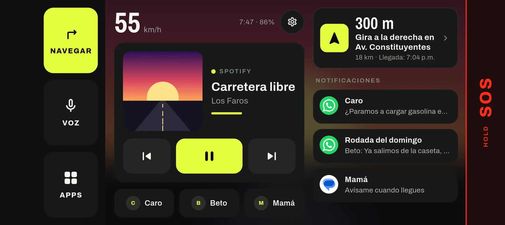
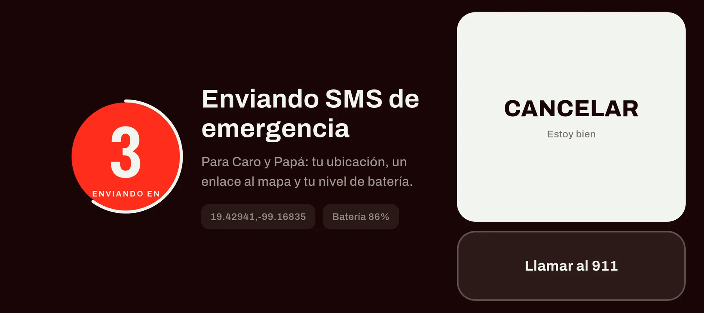
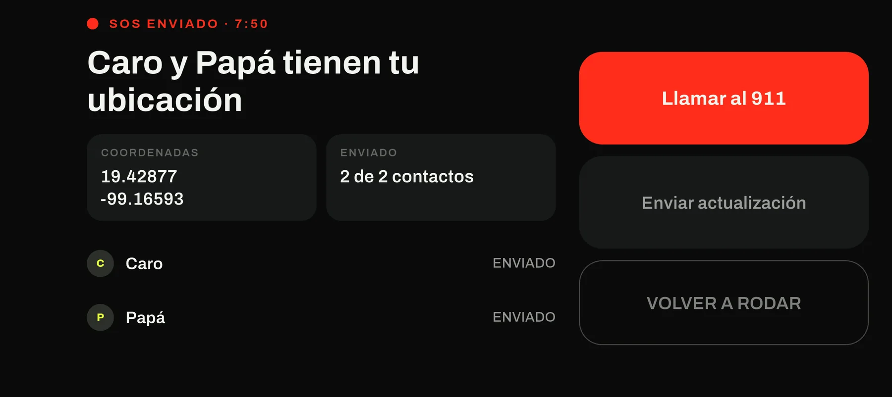
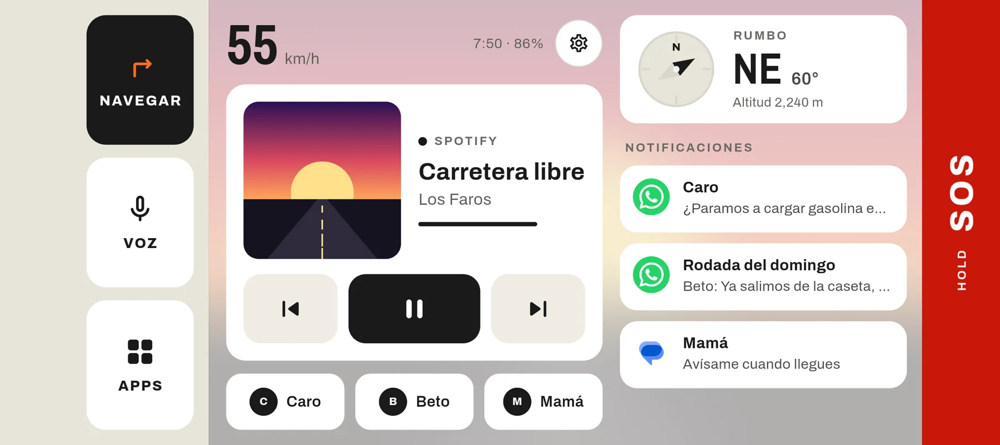
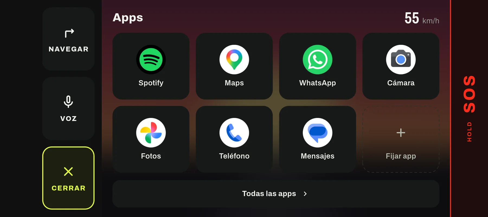
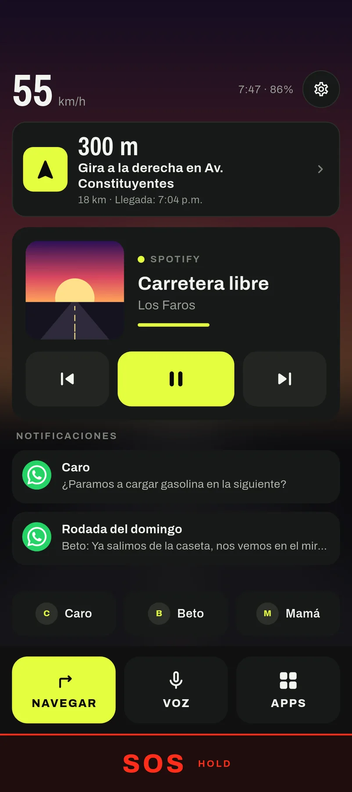
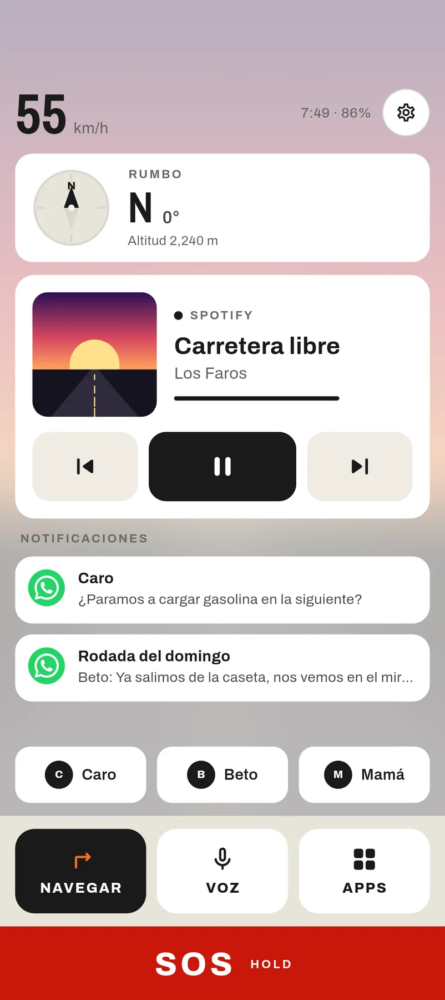
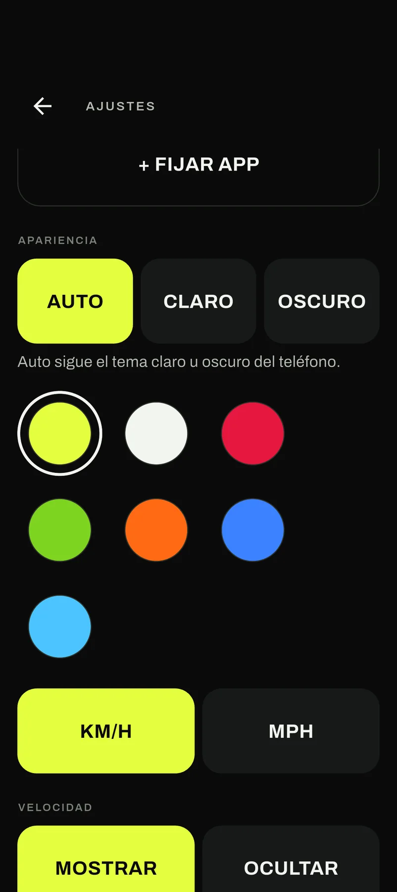

Moto
Dash
Tu teléfono, convertido en el tablero de tu moto. Un solo home con controles grandes que se leen de un vistazo.
Próximamente en Google Play
Qué hace
Velocidad y brújula
Velocidad en km/h o mph y brújula a la vista. Puedes ocultar la velocidad si ya la ves en el tablero de tu moto.
Música
Controla lo que esté sonando, con la portada del álbum, desde botones de 64 px pensados para guantes.
Notificaciones
Mensajes y avisos en pantalla. Toca para abrir, desliza para borrarlos.
Navegación
Navegar abre Google Maps y una burbuja flotante te deja volver, usar la voz o activar el SOS sin salir del mapa. La tarjeta de siguiente giro aparece cuando hay una ruta activa.
Contactos rápidos
Llama a tus favoritos con un toque.
Arranque con Bluetooth
Se abre sola cuando conectas el intercomunicador del casco o tu moto.
SOS de emergencia
Mantén presionado el botón SOS y, tras una cuenta regresiva de 5 segundos que siempre puedes cancelar, la app manda un SMS a tus contactos de emergencia con tu ubicación en Google Maps. Si falla el envío a alguien, te lo dice en pantalla contacto por contacto. El SOS es gratis y siempre lo será.


Capturas





Cómo funciona
Todo en tu teléfono
Sin cuentas ni servidores. Lo que ves en pantalla sale del propio teléfono. Lee la política de privacidad.
Sin anuncios
Ni anuncios ni rastreo. Si algo cuesta, se paga una sola vez.
Hecha para usarse rodando
Controles grandes, contraste alto, tema claro u oscuro, varios colores de acento y diseño para el teléfono de lado o en vertical.
Solo Android
Usa funciones propias de Android (launcher, acceso a notificaciones, burbuja sobre otras apps), así que no hay versión para iPhone.